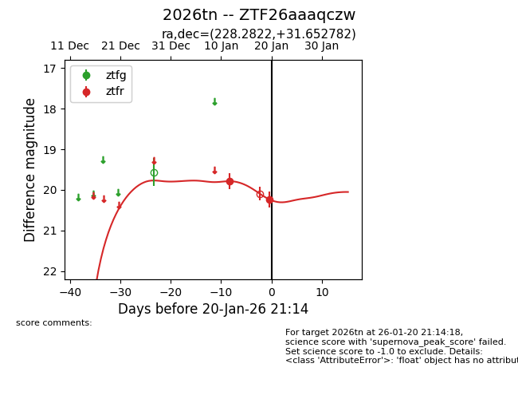
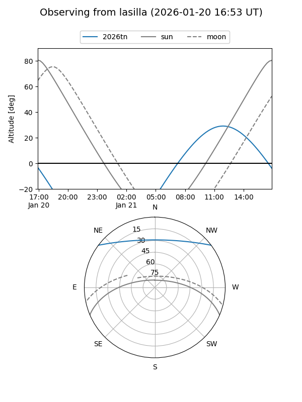
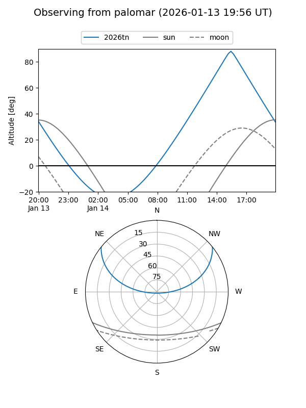
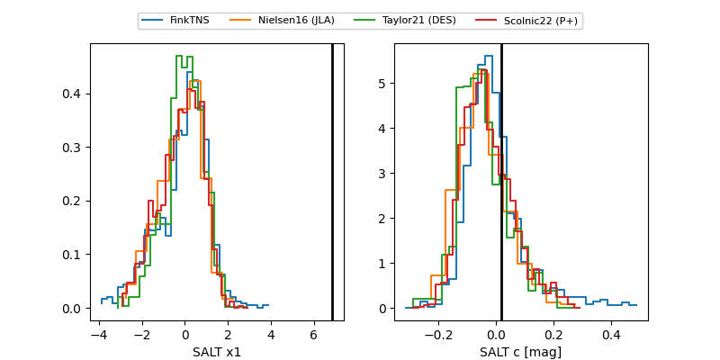

2026tn
Target 2026tn at 2026-01-14 12:50
Aliases and brokers:
FINK: link
Lasair: link
ALeRCE: link
TNS: link
YSE: link
alt names
ZTF26aaaqczw (ztf,fink_ztf)
2026tn (tns,yse)
Coordinates:
equatorial (ra, dec) = 228.2822,+31.65278
equatorial (HMS+DMS) = 15:13:07.73,+31:39:10.01
galactic (l, b) = (49.9204,+58.94261)
Flags:
Photometry:
last ztfr=19.79
1 ztfr detections
Lightcurve

Visibility


Additional plots
